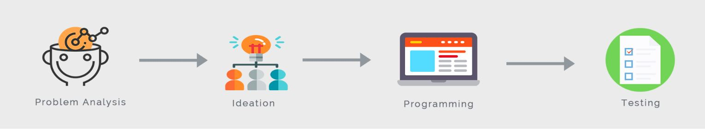

To detect illegal mining from temporally separated satellite images, a Python script was developed to automate pre-processing, image segmentation, feature extraction, training and accuracy assessment. The changes were recorded in a separate image wherein changed regions were classified as barren land, lakes, agricultural land, new mining areas, etc. I used object-based image classification instead of the usually used pixel-based classification, as this is more efficient. I tested the script with various Machine Learning Algorithms and found Random Forest to give the highest accuracy of 97.7%.
Supervisor: Dr Manoj Pandya, at Bhaskaracharya Institute for Space Applications and Geo-Informatics, India
Duration: 2 months
Link: Presentation Slides, Project Report
Libraries used: SciPy, GDAL, Scikit-Learn, Matplotlib, Numpy
PROCESS
PROBLEM ANALYSIS
RESEARCH QUESTION:
IDEATION
PROGRAMMING
TESTING